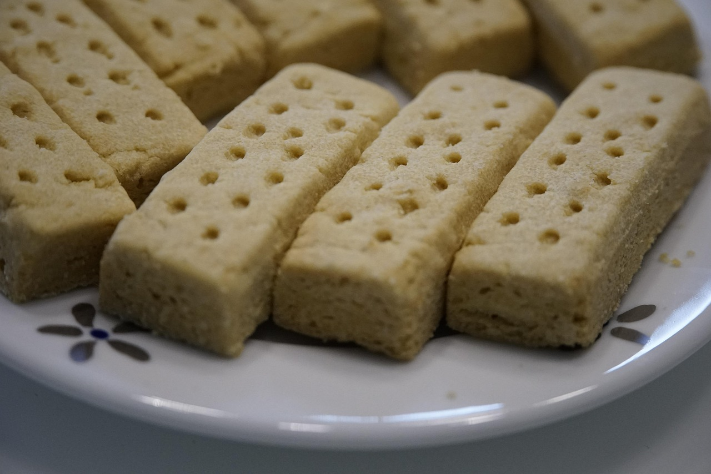

Delicious shortbread recipe!!!

Description
Have you ever tasted just butter and sugar? It is delicious! This
shortbread is the same, it has just enough flour to keep it together it is
delicious.
Ingredients
- 227g salted butter, room temperature
- 250g all purpose flour
- 100g suger
- 1 tsp vanilla, optional
Directions
- Pre-heat oven to 320° F
- Put parchment paper on cookie sheet
- Mix all the ingredients together in a bowl
- Press into a big square on the cookie sheet
- Prick the cookie with a fork all over the top
- Bake for 25-35 minutes, until top is golden